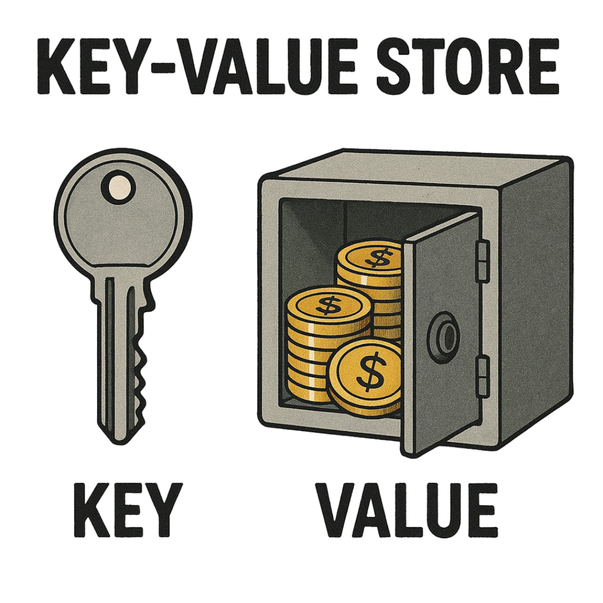
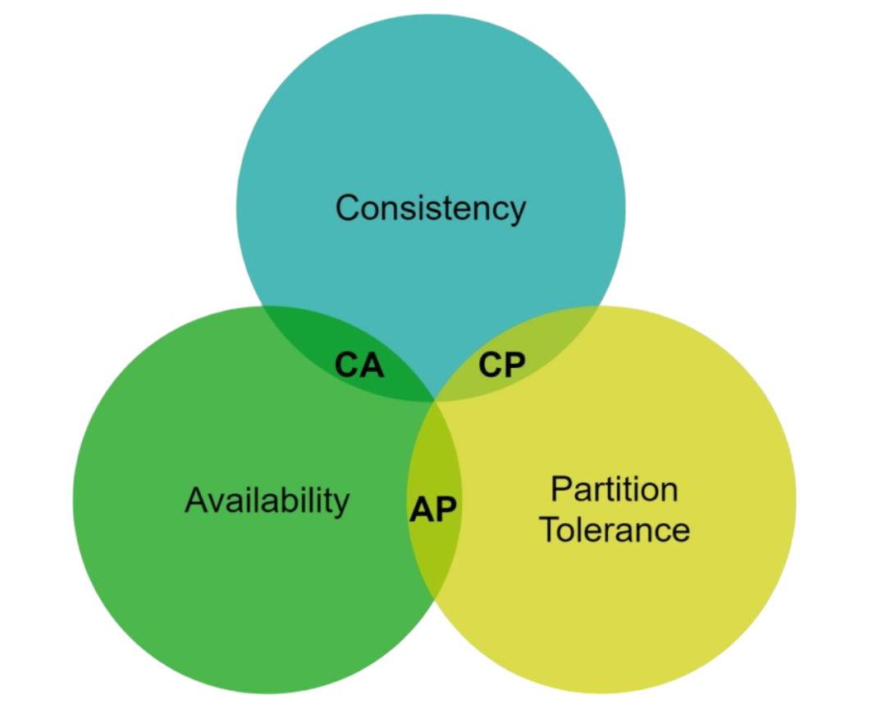
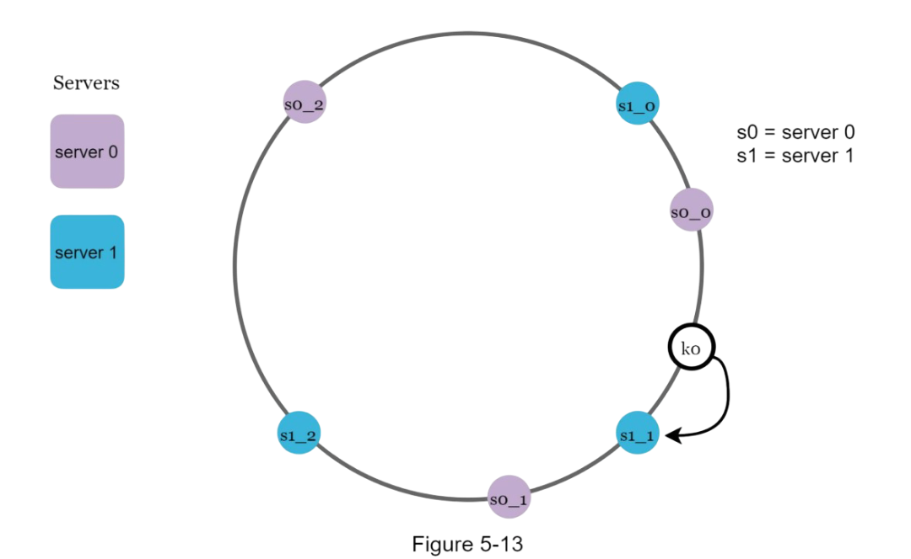
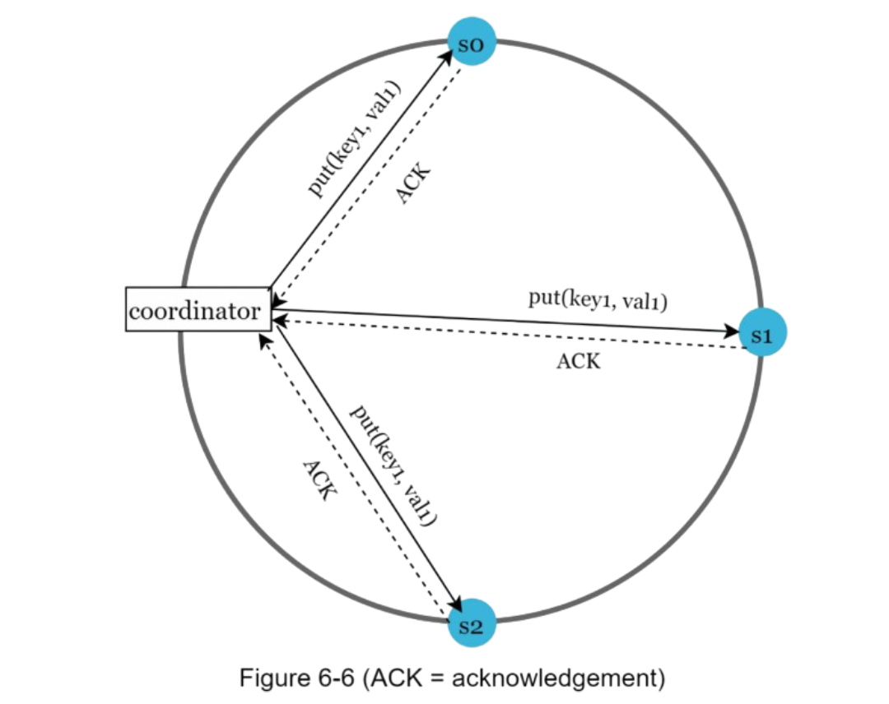
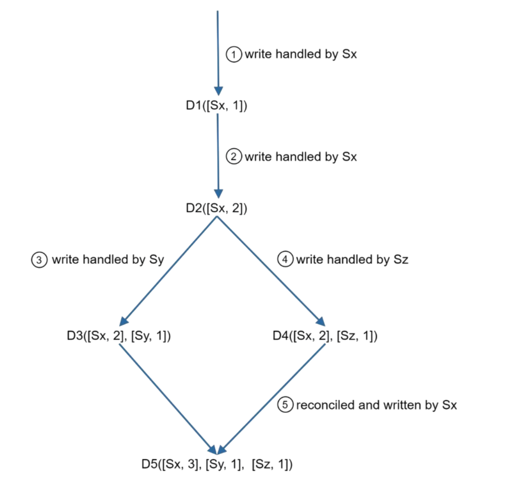
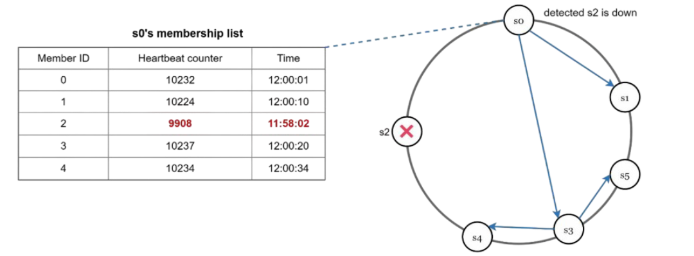
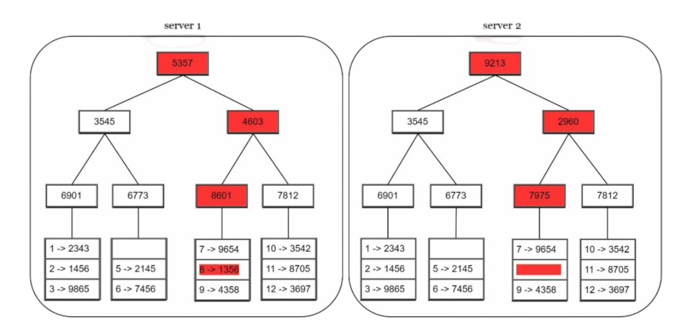

Designing a Key-Value Store

Hey there! Today we're diving into one of the most fundamental building blocks of modern distributed systems - the key-value store. If you've ever wondered how systems like Amazon DynamoDB, Redis, or Cassandra work under the hood, you're in for a treat!
When I first started learning about distributed systems, key-value stores seemed deceptively simple. I mean, how hard can it be to store and retrieve data using keys, right? Well, as it turns out, building a distributed key-value store that's highly available, scalable, and consistent is one of the most challenging problems in computer science. But don't worry - we'll break it down step by step!
I would highly recommend you to go through consistent hashing blog post [link] before continuing with this blog.
What We're Building
We're designing a distributed key-value store that supports two simple operations:
// Our key-value store API
put(key, value) // Store value associated with key
get(key) // Retrieve value associated with key
// Examples
put("user:123", "{'name': 'John', 'email': 'john@example.com'}")
get("user:123") // Returns: "{'name': 'John', 'email': 'john@example.com'}"
But here's the catch - our system needs to handle:
- Billions of key-value pairs
- High availability (99.9%+ uptime)
- Massive scale (thousands of servers)
- Automatic scaling as traffic changes
- Tunable consistency guarantees
- Low latency (single-digit milliseconds)
The Single Server Reality Check
Let's start with the obvious approach - a single server. In memory, this is trivial:
// Single server approach - too simple to be true
class SimpleKeyValueStore {
constructor() {
this.data = new Map(); // Everything in memory
}
put(key, value) {
this.data.set(key, value);
return "OK";
}
get(key) {
return this.data.get(key) || null;
}
}
const store = new SimpleKeyValueStore();
store.put("user:123", "John Doe");
console.log(store.get("user:123")); // "John Doe"
This works perfectly... until it doesn't. Memory is expensive and limited. Even if you could afford to keep everything in RAM, what happens when the server crashes? All your data is gone!
You could optimize with data compression and hybrid storage (frequently accessed data in memory, rest on disk), but you'll still hit fundamental limits. A single server can only scale so far.
Going Distributed: The CAP Theorem Reality
When we move to a distributed system, we immediately face one of the most important concepts in distributed computing - the CAP theorem. Trust me, understanding this will save you from a lot of architectural headaches!
What is CAP?

CAP states that in any distributed system, you can only guarantee two out of these three properties:
- Consistency (C): All clients see the same data at the same time, no matter which node they connect to
- Availability (A): The system remains operational and responds to requests, even if some nodes fail
- Partition Tolerance (P): The system continues to operate despite network failures that split the cluster
Let me give you a concrete example. Imagine your key-value store has three nodes: A, B, and C, all storing the same data. Now, a network issue causes node A to lose connection with B and C:
// Before partition: All nodes connected
Node A ←→ Node B ←→ Node C
// All nodes have: user:123 = "John Doe"
// After partition: Network split!
Node A || Node B ←→ Node C
// Network failure!
Now here's the dilemma: a client wants to update user:123 to "Jane Doe" and connects to node A. Should node A:
- Accept the write (choose Availability)? The system stays responsive, but now A has different data than B and C
- Reject the write (choose Consistency)? Data stays consistent, but the system is unavailable for writes
Since network partitions are inevitable in real-world systems, we must choose between consistency and availability. This gives us two practical approaches:
- CP Systems (Consistency + Partition tolerance): MongoDB, Redis Cluster, HBase
- AP Systems (Availability + Partition tolerance): DynamoDB, Cassandra, Riak
For our key-value store design, we'll focus on the AP approach, prioritizing availability and partition tolerance while offering tunable consistency.
System Architecture Overview
Before diving into the details, let me show you what our final architecture looks like:
// High-level system components
class DistributedKeyValueStore {
// All these properties in constructor, we'll discuss them below. So, don't worry!
constructor() {
this.hashRing = new ConsistentHashRing(); // Data partitioning
this.replicationFactor = 3; // N = 3 replicas
this.writeQuorum = 2; // W = 2
this.readQuorum = 2; // R = 2
this.virtualNodes = 150; // Virtual nodes per server
this.vectorClocks = new Map(); // Conflict resolution
this.membershipList = new Map(); // Failure detection
}
// Core operations
async put(key, value) { /* Implementation details below */ }
async get(key) { /* Implementation details below */ }
// Infrastructure operations
addNode(nodeId) { /* Add server to ring */ }
removeNode(nodeId) { /* Remove server from ring */ }
detectFailures() { /* Gossip protocol */ }
}
Now let's break down each component and see how they work together to create a robust distributed system.
1. Data Partitioning: The Hash Ring Magic
Remember our consistent hashing blog post? [link] This is where that knowledge becomes crucial! We need to distribute data evenly across multiple servers while minimizing data movement when servers join or leave.

The beauty of this approach is that when we add or remove servers, only a small fraction of keys need to be redistributed. If we have 100 servers and remove one, only about 1% of the data needs to move!
2. Data Replication: Never Lose Your Data
Single points of failure are the enemy of availability. That's why we replicate every piece of data across multiple servers. Here's our replication strategy:
To achieve high availability and reliability, data must be replicated asynchronously over N servers, where N is a configurable parameter. These N servers are chosen using the following logic: after a key is mapped to a position on the hash ring, walk clockwise from that position and choose the first N servers on the ring to store data copies.
With virtual nodes, the first N nodes on the ring may be owned by fewer than N physical servers. To avoid this issue, we only choose unique servers while performing the clockwise walk logic.
class ReplicationManager {
constructor(hashRing, replicationFactor = 3) {
this.hashRing = hashRing;
this.replicationFactor = replicationFactor;
}
getReplicaServers(key) {
// Get N servers for this key, starting from the key's position on the ring
return this.hashRing.getServersForKey(key, this.replicationFactor);
}
async replicateWrite(key, value, vectorClock) {
const replicaServers = this.getReplicaServers(key);
const writePromises = [];
// Send write request to all replica servers
replicaServers.forEach(serverId => {
const writePromise = this.sendWriteRequest(serverId, key, value, vectorClock);
writePromises.push(writePromise);
});
return Promise.allSettled(writePromises);
}
async sendWriteRequest(serverId, key, value, vectorClock) {
// In a real system, this would be a network call
// For simulation, we'll just log it
console.log(`Writing ${key}=${value} to server ${serverId} with clock ${JSON.stringify(vectorClock)}`);
// Simulate network delay and potential failures
return new Promise((resolve, reject) => {
setTimeout(() => {
if (Math.random() < 0.1) { // 10% failure rate
reject(new Error(`Server ${serverId} is unavailable`));
} else {
resolve({ serverId, success: true });
}
}, Math.random() * 100); // 0-100ms delay
});
}
}
But replication introduces a new challenge: how do we ensure consistency across replicas? That's where quorum consensus comes in.
3. Quorum Consensus: Balancing Speed and Consistency
Since data is replicated at multiple nodes, it must be synchronized across replicas. Quorum consensus can guarantee consistency for both read and write operations. But wait, what is Quorum consensus?
Quorum consensus lets us tune the trade-off between consistency, availability, and performance. Here's how it works:
- N: Number of replicas of db.
- W: A write quorum of size W. For a write operation to be considered as successful, write operation must be acknowledged from at least W replicas.
- R: A read quorum of size R. For a read operation to be considered as successful, read operation must wait for responses from at least R replicas.

W = 1 means that the coordinator must receive at least one acknowledgment before the write operation is considered as successful. A coordinator acts as a proxy between the client and the nodes.
The configuration of W, R and N is a typical trade-off between latency and consistency. If W or R > 1, the system offers better consistency; however, the query will be slower because the coordinator must wait for the response from the slowest replica.
- If R = 1 and W = N, the system is optimized for a fast read.
- If W = 1 and R = N, the system is optimized for fast write. But lacks consistency.
- If W + R > N, strong consistency is guaranteed (Usually N = 3, W = R = 2).
- If W + R <= N, strong consistency is not guaranteed.
The magic formula is: If W + R > N, we get strong consistency!
Strong consistency is usually achieved by forcing a replica not to accept new reads/writes until every replica has agreed on current write. This approach is not ideal for highly available systems because it could block new operations.
class QuorumManager {
constructor(N = 3, W = 2, R = 2) {
this.N = N; // Total replicas
this.W = W; // Write quorum
this.R = R; // Read quorum
}
async quorumWrite(key, value) {
const replicationManager = new ReplicationManager(this.hashRing, this.N);
const vectorClock = this.generateVectorClock(key); // Next Section (Vector Clocks)
const results = await replicationManager.replicateWrite(key, value, vectorClock);
const successfulWrites = results.filter(result =>
result.status === 'fulfilled' && result.value.success
);
if (successfulWrites.length >= this.W) {
console.log(`Write successful! ${successfulWrites.length}/${this.N} replicas confirmed`);
return { success: true, vectorClock };
} else {
console.log(`Write failed! Only ${successfulWrites.length}/${this.W} required confirmations`);
return { success: false, error: 'Insufficient replicas' };
}
}
async quorumRead(key) {
const replicaServers = this.hashRing.getServersForKey(key, this.N);
const readPromises = replicaServers.slice(0, this.R).map(serverId =>
this.readFromServer(serverId, key)
);
const results = await Promise.allSettled(readPromises);
const successfulReads = results.filter(result =>
result.status === 'fulfilled' && result.value.success
);
if (successfulReads.length >= this.R) {
// Resolve conflicts using vector clocks
return this.resolveReadConflicts(successfulReads.map(r => r.value));
} else {
throw new Error('Insufficient replicas for read quorum');
}
}
async readFromServer(serverId, key) {
// Simulate reading from a server
return new Promise((resolve, reject) => {
setTimeout(() => {
if (Math.random() < 0.1) { // 10% failure rate
reject(new Error(`Server ${serverId} is unavailable`));
} else {
resolve({
serverId,
success: true,
value: `data_for_${key}`,
vectorClock: { [serverId]: 1 }
});
}
}, Math.random() * 50);
});
}
}
Different quorum configurations give us different guarantees:
- W=1, R=3: Fast writes, slow reads, read-optimized
- W=3, R=1: Slow writes, fast reads, write-optimized
- W=2, R=2: Balanced performance with strong consistency
4. Conflict Resolution: Vector Clocks to the Rescue
Replication gives high availability but causes inconsistencies among replicas. Versioning and vector clocks are used to solve inconsistency problems. Versioning means treating each data modification as a new immutable version of data.
Let's understand versioning. We have two replicas n1 and n2 having same data:
{
name: "john"
}
But Server 1 updates data in n1 to "johnSanFran" and Server 2 updates data in n2 to "johnNewYork". Now, we have conflicting values, called versions v1 and v2. To resolve this issue, we need a versioning system that can detect conflicts and reconcile conflicts.
A vector clock is a common technique to solve this problem. Let us examine how vector clocks work. A vector clock is a [server, version] pair associated with a data item
If data item D is written to server Si, the system must perform one of the following tasks.
- Increment vi if [Si, vi] exists.
- Otherwise, create a new entry [Si, 1].

But there are two problems with this approach:
- First, vector clocks add complexity to the client because it needs to implement conflict resolution logic.
- Second, the [server: version] pairs in the vector clock could grow rapidly. To fix this problem, we set a threshold for the length, and if it exceeds the limit, the oldest pairs are removed. Example: D([s1:4], [s2:2], [s3:6], ...500 pairs).
5. Failure Detection: The Gossip Protocol
In a distributed system, servers fail all the time. We need a way to detect failures quickly without overwhelming the network. Enter the gossip protocol:
- Each node maintains a node membership list, which contains member IDs and heartbeat counters.
- Each node periodically increments its heartbeat counter.
- Each node periodically sends heartbeats to a set of random nodes, which in turn propagate to another set of nodes.
- Once nodes receive heartbeats, membership list is updated to the latest info.
- If the heartbeat has not increased for more that predefined periods, the member is considered as offline.

class FailureDetector {
constructor(serverId, membershipList) {
this.serverId = serverId;
this.membershipList = membershipList; // Map of serverId -> {heartbeat, timestamp}
this.gossipInterval = 1000; // 1 second
this.failureThreshold = 5000; // 5 seconds
this.startGossiping();
}
startGossiping() {
setInterval(() => {
this.incrementHeartbeat();
this.selectRandomPeersAndGossip();
this.detectFailures();
}, this.gossipInterval);
}
incrementHeartbeat() {
if (!this.membershipList.has(this.serverId)) {
this.membershipList.set(this.serverId, { heartbeat: 0, timestamp: Date.now() });
}
const myInfo = this.membershipList.get(this.serverId);
myInfo.heartbeat++;
myInfo.timestamp = Date.now();
}
selectRandomPeersAndGossip() {
const allServers = Array.from(this.membershipList.keys())
.filter(id => id !== this.serverId);
// Gossip with up to 3 random peers
const peersToGossip = this.shuffleArray(allServers).slice(0, 3);
peersToGossip.forEach(peerId => {
this.sendGossipMessage(peerId);
});
}
sendGossipMessage(peerId) {
const gossipData = {
from: this.serverId,
membershipList: Object.fromEntries(this.membershipList)
};
console.log(`${this.serverId} gossiping with ${peerId}:`, gossipData);
// In a real system, this would be a network call
this.simulateReceiveGossip(peerId, gossipData);
}
simulateReceiveGossip(fromServerId, gossipData) {
// Update our membership list with received information
for (const [serverId, info] of Object.entries(gossipData.membershipList)) {
const currentInfo = this.membershipList.get(serverId);
if (!currentInfo || info.heartbeat > currentInfo.heartbeat) {
this.membershipList.set(serverId, {
heartbeat: info.heartbeat,
timestamp: Date.now() // Update timestamp to now
});
}
}
}
detectFailures() {
const now = Date.now();
const failedServers = [];
for (const [serverId, info] of this.membershipList.entries()) {
if (serverId !== this.serverId &&
now - info.timestamp > this.failureThreshold) {
console.log(`⚠️ Server ${serverId} appears to have failed!`);
failedServers.push(serverId);
}
}
// Remove failed servers from membership list
failedServers.forEach(serverId => {
this.membershipList.delete(serverId);
// Trigger data redistribution in the hash ring
this.onServerFailure(serverId);
});
}
onServerFailure(failedServerId) {
console.log(`Handling failure of server ${failedServerId}...`);
// In a real system, we would:
// 1. Remove the server from the hash ring
// 2. Redistribute its data to other servers
// 3. Update routing tables
}
shuffleArray(array) {
const shuffled = [...array];
for (let i = shuffled.length - 1; i > 0; i--) {
const j = Math.floor(Math.random() * (i + 1));
[shuffled[i], shuffled[j]] = [shuffled[j], shuffled[i]];
}
return shuffled;
}
}
6. Handling Different Types of Failures
Not all failures are permanent. Our system needs to handle both temporary and permanent failures gracefully.
Temporary Failures: Sloppy Quorum
Sometimes a server is temporarily unavailable (network hiccup, high load, etc.). Instead of failing the operation, we use "sloppy quorum".
Sloppy quorum is a distributed system technique that relaxes quorum requirements to improve availability and fault tolerance during read and write operations. How it works:
- Redirecting operations: When the nodes designated to handle a key are unavailable, a request is temporarily redirected to the next available healthy nodes in the cluster.
- Hinted handoff: The temporarily used nodes store the data and then use a "hinted handoff" process to transfer the data to the original "home" nodes once they come back online.
- Maintaining durability: Sloppy quorum ensures data durability by storing the write on a certain number of nodes ((w)) somewhere in the system, but it doesn't guarantee that a read ((r)) will see that data immediately.
Permanent Failures: Merkle Trees
For permanent failures, we need to detect what data is missing and synchronize it efficiently. Merkle trees are perfect for this:
"A hash tree or Merkle tree is a tree in which every non-leaf node is labeled with the hash of the labels or values (in case of leaves) of its child nodes. Hash trees allow efficient and secure verification of the contents of large data structures"
You'll understand the definition with example below. Don't worry. We implement an anti-entropy protocol to keep replicas in sync. Anti-entropy involves comparing each piece of data on replicas and updating each replica to the newest version.
Steps;)
- Step 1: Divide key space into buckets (4 in our example). A bucket is used as the root level node to maintain a limited depth of the tree.
- Step 2: Once the buckets are created, hash each key in a bucket using a uniform hashing method.
- Step 3: Create a single hash node per bucket.
- Step 4: Build the tree upwards till root by calculating hashes of children.

To compare two Merkle trees, start by comparing the root hashes. If root hashes match, both servers have the same data. If root hashes disagree, then the left child hashes are compared followed by right child hashes. You can traverse the tree to find which buckets are not synchronized and synchronize those buckets only.
Using Merkle trees, the amount of data needed to be synchronized is proportional to the differences between the two replicas, and not the amount of data they contain.
Performance Characteristics and Trade-offs
Let's talk about what we've achieved and what trade-offs we've made:
What We Get
- High Availability: System stays up even when individual servers fail
- Horizontal Scalability: Add servers to handle more load
- Partition Tolerance: Network splits don't bring down the system
- Automatic Recovery: Failed servers can rejoin and catch up
- Tunable Consistency: Adjust quorum values based on your needs
What We Trade Off
- Eventual Consistency: Data might be temporarily inconsistent across replicas
- Complex Conflict Resolution: Clients may need to handle conflicting values
- Storage Overhead: Data is replicated across multiple servers
- Network Overhead: Coordination requires constant communication
Real-World Applications
Our design principles are used in production by some of the biggest systems in the world:
- Amazon DynamoDB: Uses similar consistent hashing and quorum approaches
- Apache Cassandra: Implements ring-based partitioning and tunable consistency
- Riak: Uses vector clocks and anti-entropy processes
- Voldemort: LinkedIn's key-value store with similar architecture
When to Use This Design
Our distributed key-value store is perfect when you need:
- High availability: 99.9%+ uptime requirements
- Massive scale: Billions of keys, petabytes of data
- Global distribution: Users around the world
- Flexible consistency: Different consistency needs for different data
- Simple data model: Key-value pairs work for your use case
Avoid this design if you need:
- Strong consistency guarantees (use CP systems instead)
- Complex queries and joins (use relational databases)
- ACID transactions across multiple keys
- Small scale where a single server would suffice
Wrapping Up
Building a distributed key-value store is like orchestrating a symphony of moving parts. Each component - from consistent hashing to vector clocks to gossip protocols - plays a crucial role in creating a system that's both robust and scalable.
The beauty of this design is how it gracefully handles the challenges of distributed systems. Servers fail? No problem, we have replication and failure detection. Network partitions? We prioritize availability and use conflict resolution. Need to scale? Just add more servers to the ring.
What I find most fascinating is how these concepts connect to our previous discussions. Remember our consistent hashing blog? That's the foundation that makes automatic scaling possible. The principles we discussed about trade-offs apply here too - there's no silver bullet, just informed choices based on your specific requirements.
Next time you're using a service like DynamoDB or Cassandra, you'll have a deeper appreciation for the engineering marvels happening behind the scenes. These systems are handling millions of requests per second while dealing with server failures, network partitions, and data consistency - all transparently to the user.
I hope this deep dive was helpful! The world of distributed systems is endlessly fascinating, and key-value stores are just the beginning. There's so much more to explore - from distributed databases to consensus algorithms to microservices architectures.
Happy coding! 🚀
- Harsh Chauhan